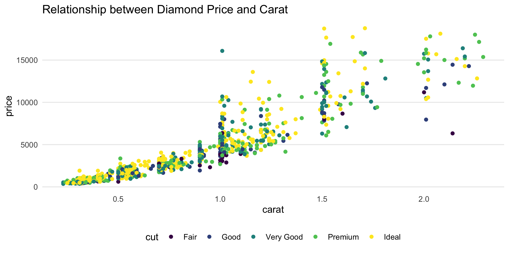
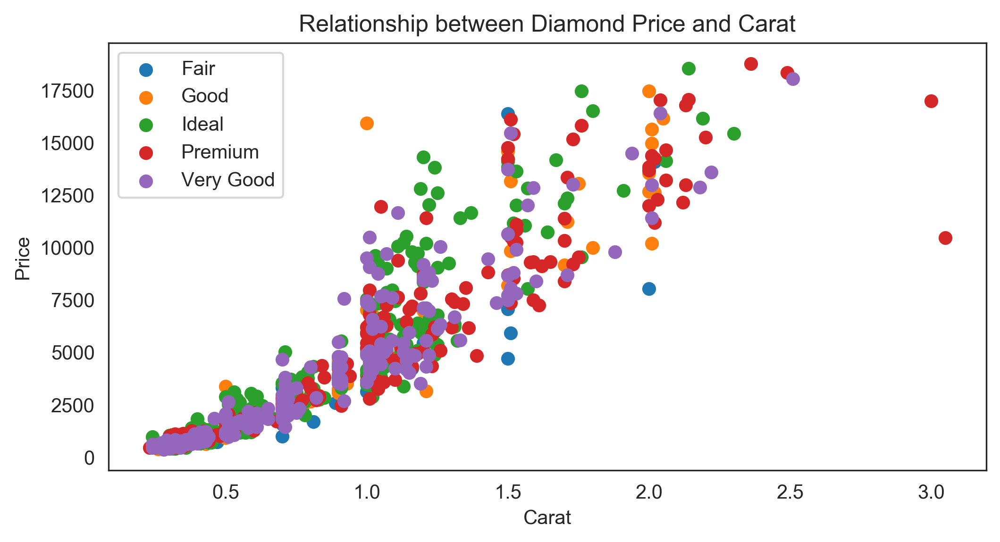
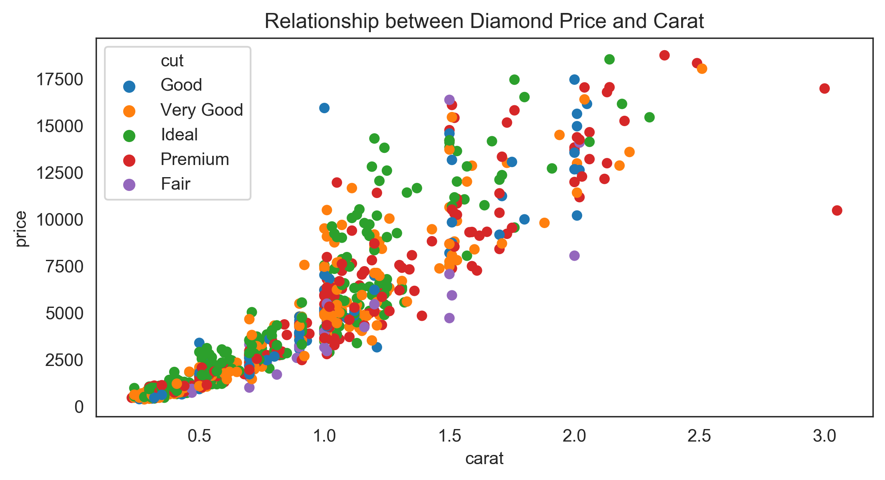
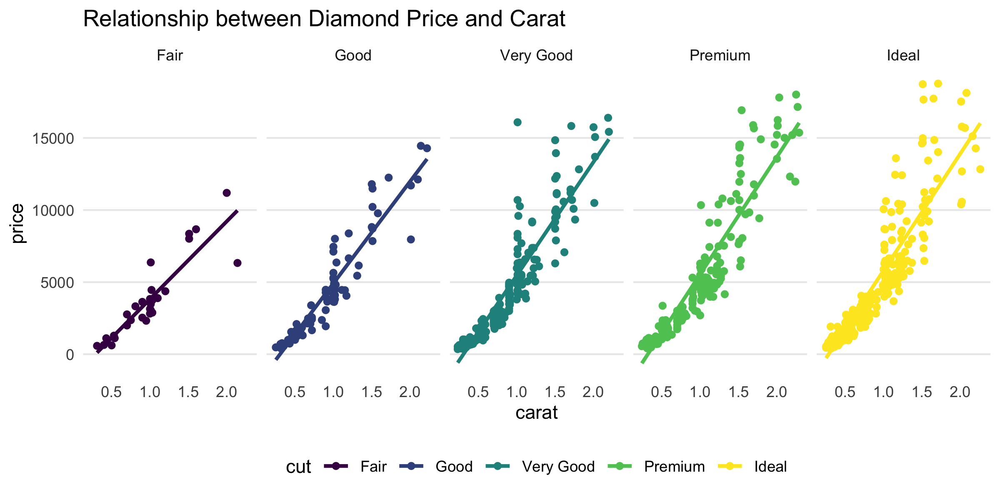
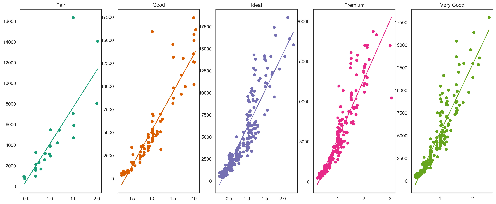
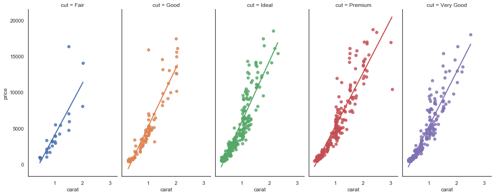
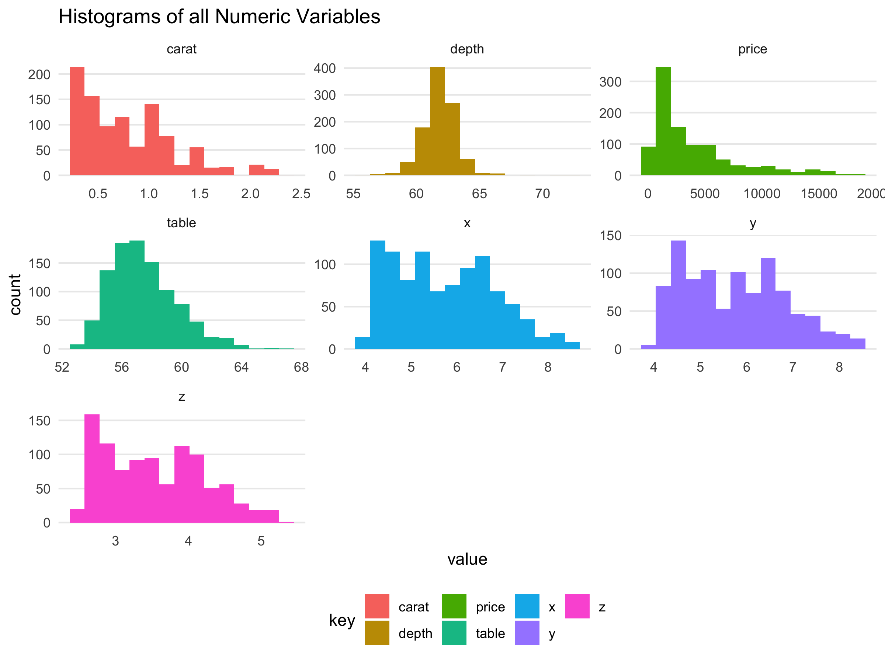
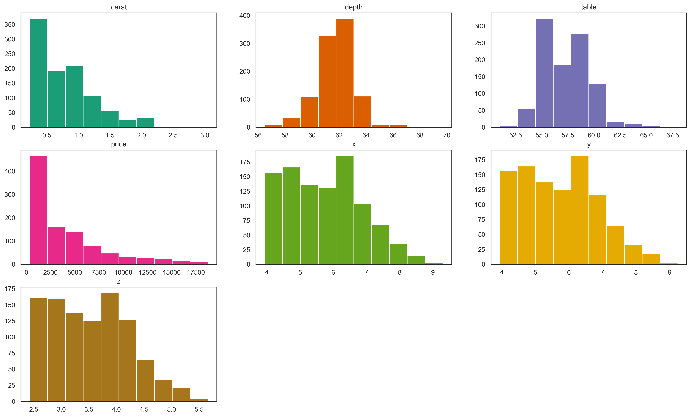

In part one of this series, I covered how to replicate much of the tidyverse functionality in Python and pandas. In this post, I’ll go over how to do basic plotting with matplotlib and seaborn, as those seem to be the two most commonly used Python plotting libraries. I’ll try to replicate plots that I can easily do in ggplot2, the graphics package in R.
I’m a big fan of ggplot2 in R because it creates a consistent “grammar” for which all graphics must adhere to. The graphics have to make sense in the grammar of graphics, otherwise an error might occur. For example, dual y-axes are prohibited because they violate many “rules” about good graphic design. It’s sort of like a nice little nudge to force oneself into making decent graphics.
On the other hand, matplotlib is more similar to base plotting in R, in that one can essentially add on layers of different components. There aren’t any real restrictions on what can and cannot be done. seaborn extends the functionality of matplotlib somewhat, to more closely mirror ggplot2. I’ll try my best to recreate some common ggplot2 graphics in Python and see what limitations I run in to.
Setup
I’ll use the “diamonds” data set. In R, it is accessible from the ggplot2 package by typing data(diamonds). For the purposes of visualization, I’ll take a sample of 1000 rows. What’s really nice in ggplot2 is that I can adjust the styling with theme_set(). This allows me to set a standardized theme for all future plots, which will save me a lot of typing.
library(ggplot2)
library(dplyr)
library(tidyr)
data(diamonds)
# Sample data set
diamonds <- diamonds %>% sample_n(1000)
# Adjust styling in ggplot with `theme_set()`
theme_set(
theme_minimal() +
theme(legend.position = "bottom") +
theme(panel.grid.minor = element_blank()) +
theme(panel.grid.major.x = element_blank())
)In Python, the “diamonds” data set can be accessed from seaborn.
import matplotlib
import matplotlib.pyplot as plt
import seaborn as sns
sns.set_style('white')
import numpy as np
from numpy.polynomial.polynomial import polyfit
import pandas as pd
df = sns.load_dataset('diamonds')
df2 = df.sample(n = 1000)Note that there may be differences in plot appearances between R and Python due to differences in data samples.
Scatterplot
In ggplot2, I can very succinctly create plots with only a few lines of code. The first line specifies the data set. The second line adds a “geometry”, which in the case of a scatterplot are points. Here I can specify the aesthetics corresponding to those points, such as that I want the points to be colored by the cut of the diamond.
ggplot(data = diamonds) +
geom_point(aes(x = carat, y = price, color = cut)) +
labs(title = "Relationship between Diamond Price and Carat")
Accomplishing the same in matplotlib is considerably more verbose because you have to add on each of the layers separately. I accomplished this by creating a custom function scatter() that layers on each scatter plot for each cut grouping.
# with matplotlib
plt.figure(figsize=(8,4), dpi=300)
def scatter(group):
plt.scatter(x = group["carat"], y = group["price"], label = group.name)
df2.groupby(["cut"]).apply(scatter)
plt.xlabel("Carat")
plt.ylabel("Price")
plt.title("Relationship between Diamond Price and Carat")
plt.legend()
With seaborn. This feels a lot more ggplot2-like, but I still have to specify the title and legend in separate lines.
# with seaborn
plt.figure(figsize=(8,4), dpi=300)
sns.scatterplot(
data = df2,
x = "carat",
y = "price",
hue = "cut",
linewidth = 0
)
plt.title("Relationship between Diamond Price and Carat")
plt.legend()
Scatterplot with Facetting
Since it can be a bit hard to see each of individual groupings, I can break them out into their own subplots by way of using facet_grid() in R. Additionally, I’ll fit a simple regression on top of each grouping to see how the relationship differs by group.
ggplot(data = diamonds, aes(x = carat, y = price, color = cut)) +
geom_point() +
geom_smooth(method = "lm", se = F) +
facet_grid(cols = vars(cut)) +
labs(title = "Relationship between Diamond Price and Carat")
In matplotlib, this is again fairly complicated because I cannot create facets natively. I have to create subplots and loop through the various levels of the categorical variable “cut”. Then, to fit a line, I have to run a regression using polyfit() and plot that separately.
# with matplotlib. creating subplots
plt.figure(figsize=(20,8), dpi=300)
cp = ["#1b9e77", "#d95f02", "#7570b3", "#e7298a", "#66a61e", "#e6ab02", "#a6761d"]
for i, val in enumerate(sorted(set(df2["cut"]))):
# filter data
df_mini = df2[df2["cut"] == val]
# add line
b, m = polyfit(df_mini["carat"], df_mini["price"], 1)
plt.subplot(1,5,i+1)
plt.scatter(x = df_mini["carat"], y = df_mini["price"], label = val, color = cp[i])
plt.plot(df_mini["carat"], m*df_mini["carat"] + b, linestyle = "-", color = cp[i])
plt.title(val)
In seaborn, this is much simpler due to sns.lmplot().
sns.lmplot(
data = df2.sort_values("cut"),
x = "carat",
y = "price",
col = "cut",
hue = "cut",
height = 6,
aspect = 0.5,
ci = None
)
Histogram
In the last example, I want to plot histograms for all numeric columns in the data frame. This is useful exercise in data exploration for a machine learning task because it allows me to quickly see distributions. This may help in case I want to perform any power or log transformations.
diamonds_num <- diamonds %>%
select_if(is.numeric) %>%
gather()
ggplot(data = diamonds_num, aes(x = value, fill = key)) +
facet_wrap(facets = vars(key), scales = "free") +
geom_histogram(bins = 15) +
labs(title = "Histograms of all Numeric Variables")
With matplotlib:
plt.figure(figsize=(20,12), dpi=300)
df2_float = df2.select_dtypes(["float64", "int64"])
for i, col in enumerate(df2_float.columns):
plt.subplot(3, 3, i+1)
plt.hist(df2_float[col], color = cp[i])
plt.title(col)
Conclusion
There’s obviously so much more functionality and other chart types that can be created, but I wanted to provide just a cursory introduction of what can be done with the different plotting libraries in both R and Python. I’m sure there’s also some functionality in Python that I’m not fully exploiting given my lack of expertise with the language (such as changing the appearance).
I’m still predominantly going to stick with R and ggplot2 if I want to make pretty & readable plots, but it’s good to know that a lot of the same can be replicated in Python.